One Connect 四主题换皮
历史过程记录：三套各 20 种牌面与主要界面资源已接入开发工程；斋月 20 种保留备用。以下按时间保留早期方案和验证，最新状态以换皮总览为准；部分状态和设备体验仍待验收。
当前连线和消除特效：原版已恢复
此前本页将旧候选标为当前，是展示记录未及时更新。当前开发版的连接端点、线段和两张消除动画图集与原 ZIP 逐文件一致；原 Construct 对象及相关事件表也一致。下方是当前文件及对局采样，旧候选已在历史段落中标注停用。两版配对运行采样均出现连接点、线段和消除动画；采样覆盖部分帧，完整动态视觉对照仍待核验。
原版连接端点

原版连线素材

原版消除图集 0

原版消除图集 1

当前连接端点

当前连线素材
当前消除图集 0
当前消除图集 1

当前对局连线采样
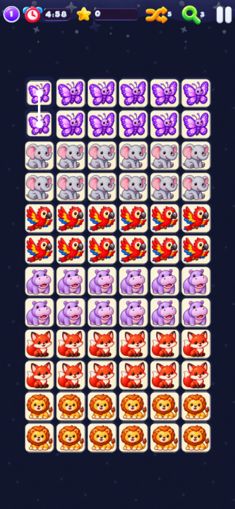
当前对局消除采样
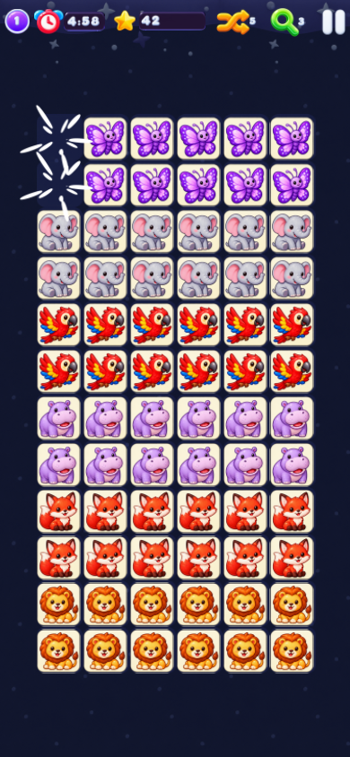
对局代表样
原版竖屏

已停用：旧版动物对局概念
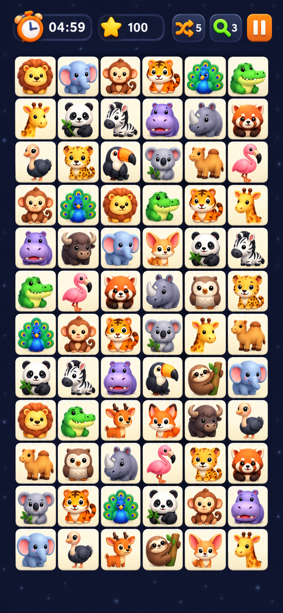
此稿误用了动态牌面风格，材质过于圆润立体，已根据用户反馈停用；不作为后续资源生产基准。
用户确认的画风
用户明确选择这张甜点参考图的卡通描边、材质、高光和牌面样式作为后续画风；每帧主体主色须继承 One Connect 对应原帧。此参考图为用户选定基准，后续生成时作为实际输入；其物品自然色并不自动满足逐帧主色契约。
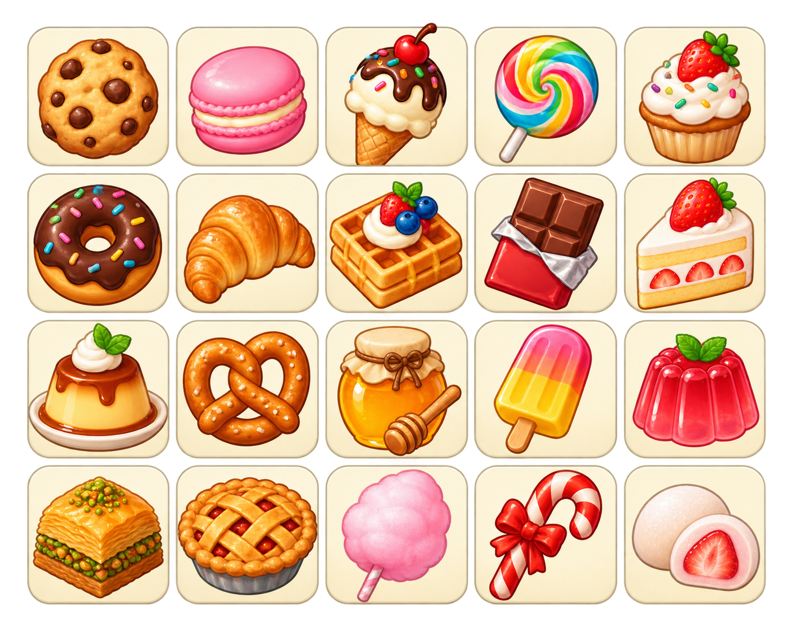
早期静态画风测试（非当前基准）
用户提供的静态参考
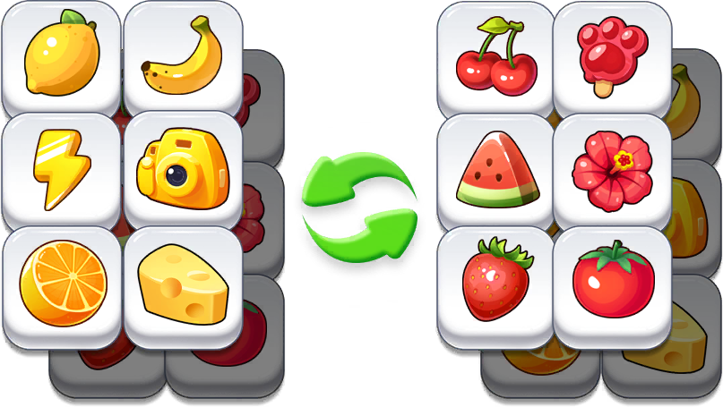
动物第 1–6 帧：新样本
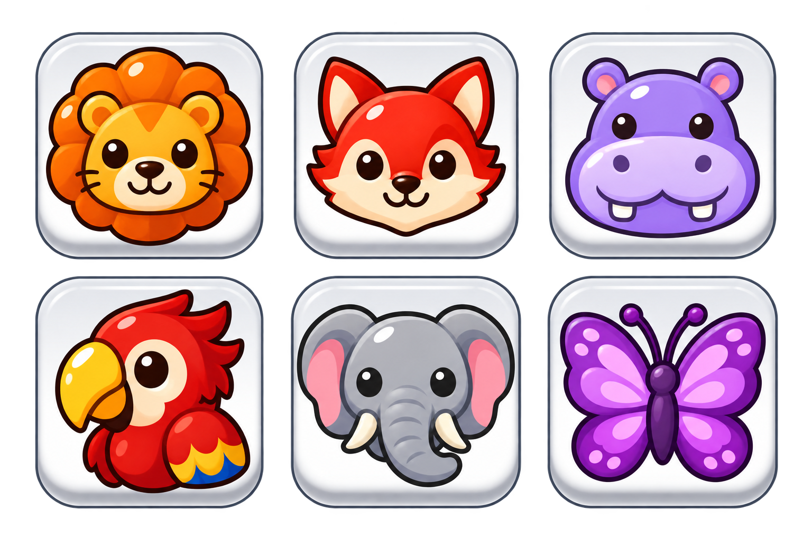
对应原版 1–6 帧的橙、红、淡紫、深红、灰、紫色。样本未经实际图集回填或小尺寸辨识验收；第 4 帧深红与样本亮红的差异仍需校正。
色彩与主题
背景 #1A1A2E、面板 #22263A、橙 #F7931E、奖励金 #FFD700、成功绿 #4CAF50、失败红 #F44336。
四主题：非洲/亚洲动物、甜点、热带水果、斋月。斋月主题按要求仅作为备用素材，暂不加入游戏或改动关卡逻辑。
原规范要求“同主题 20 张色相间隔 ≥30°”无法全部互相满足：色相环一周只有 360°，20 张互相间隔至少 30°需要 600°。以轮廓优先，并对相邻/易混淆对象做区分；具体采用规则与实际可辨性需验收。
四主题牌面候选
三套主题已按原版图集坐标切图并在独立副本进行受控浏览器测试；逐帧主色和正式设备体验仍需验收。动物原候选中的猪已替换为粉色海星，其他 19 个区域保持不变。
动物 · 候选
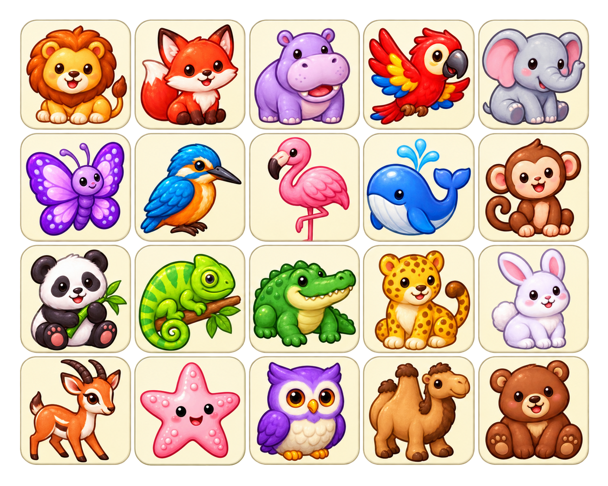
甜点 · 候选
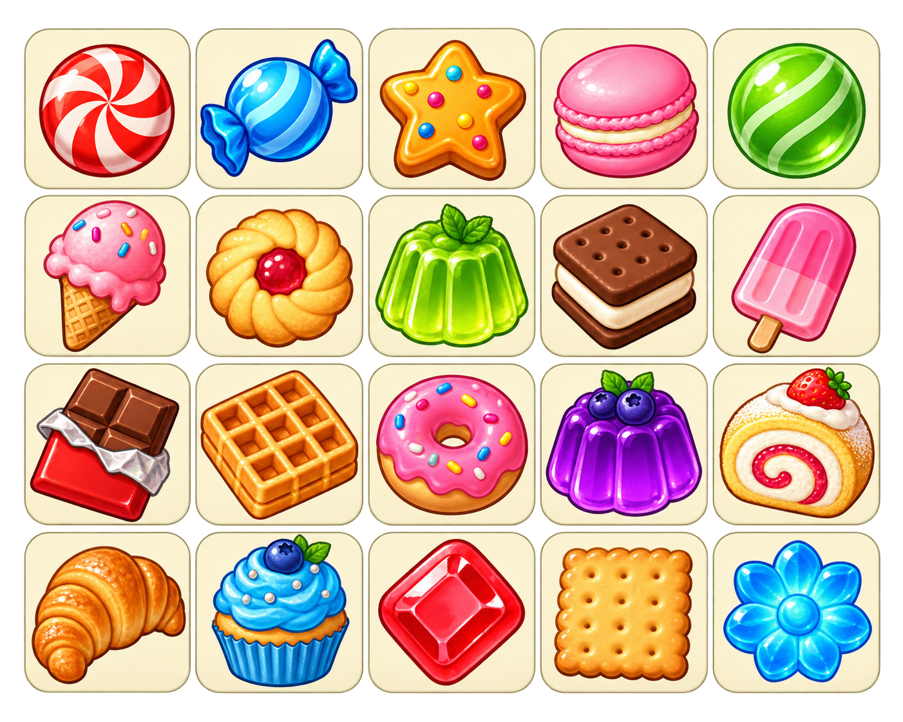
热带水果 · 候选
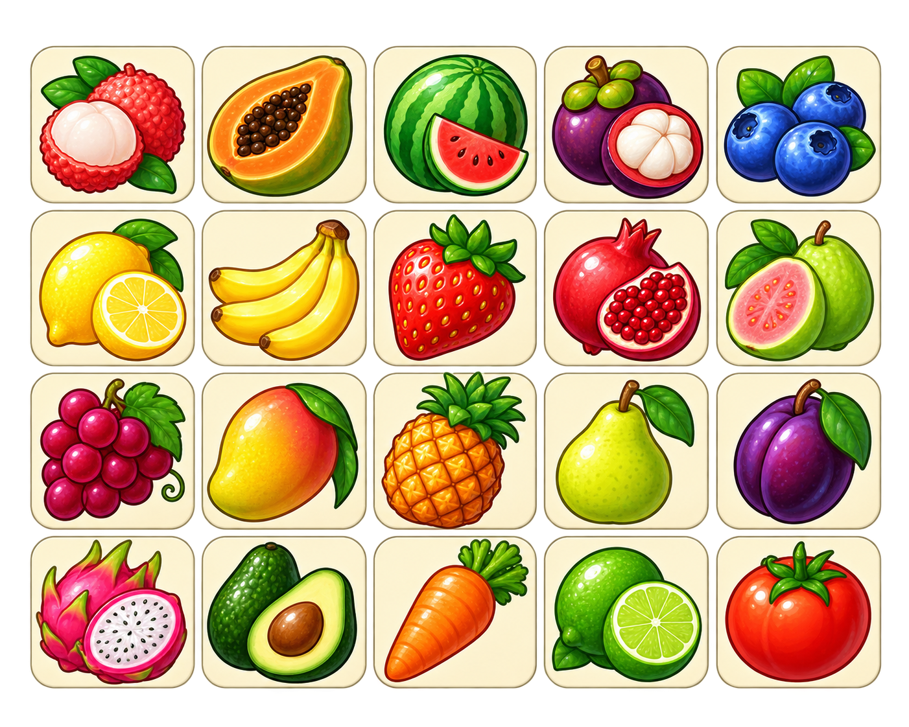
斋月 · 简化并修正三处出框
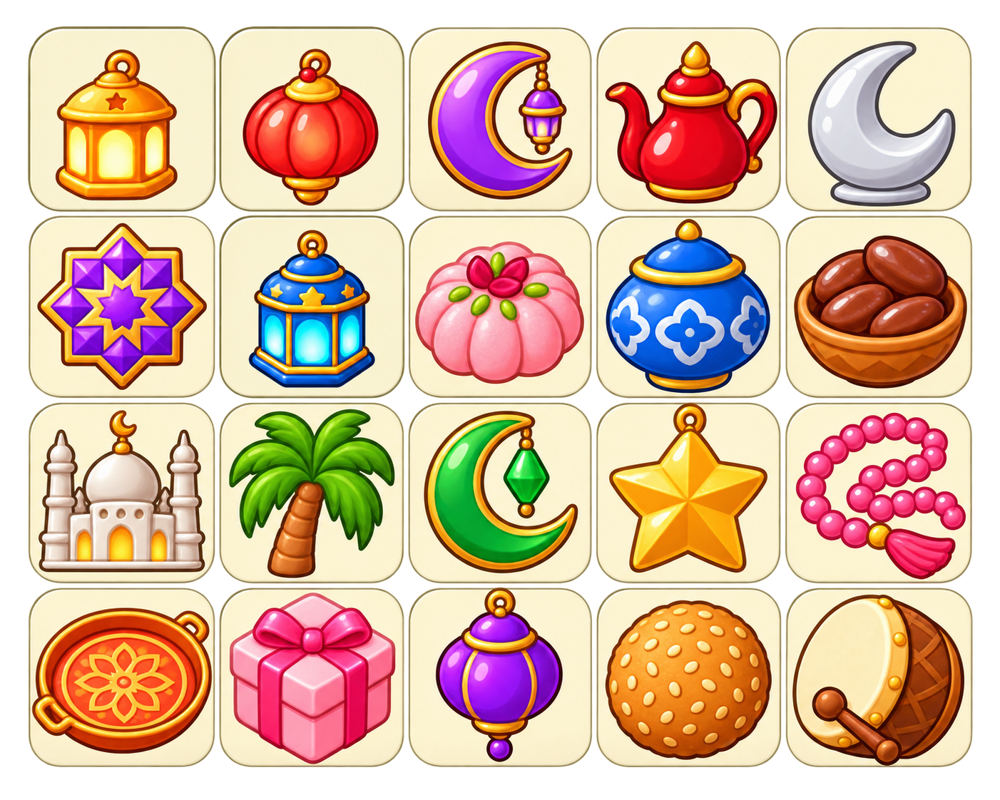
仅修复橙灯、红灯、蓝灯的越框；相对于简化版，其他 17 张对应 96×96 切片逐字节一致。尚未在游戏中验证。
各主题可查看 96×96 原版/候选对照：动物旧版对照含已停用的猪图，仅供历史追溯；甜点 · 水果。旧版颜色诊断表未包含海星和最新斋月修正，仅为历史筛查，浅灰与黑白帧可能误判，不可替代目视。


斋月：三处越框修正
左侧为简化版返修前，右侧为仅修改橙灯、红灯和蓝灯后的版本；其他 17 张不变。
修正前
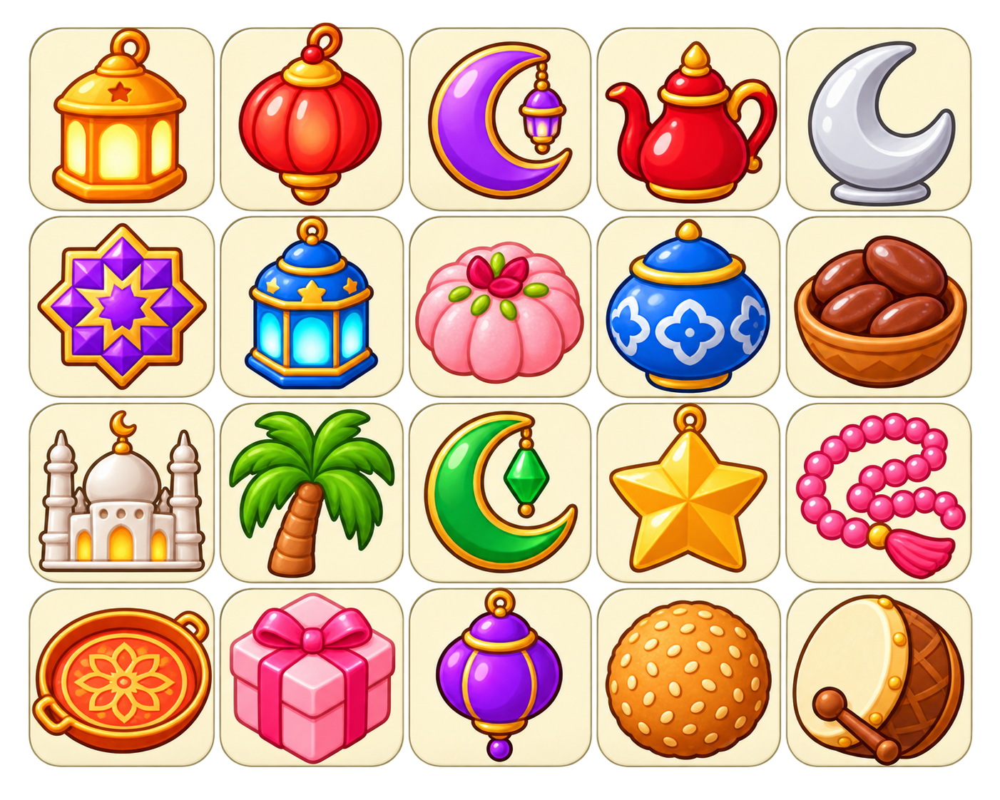
修正后
原版逐帧主色
用户指定：替换后的每一个牌型继承 One Connect 对应原帧的主色，不按照新物品的自然色随意改色。以下为原版 60 帧与机器提取的候选色；灰白、混色以及细节需目视核对，不能把候选数值当作验收通过。
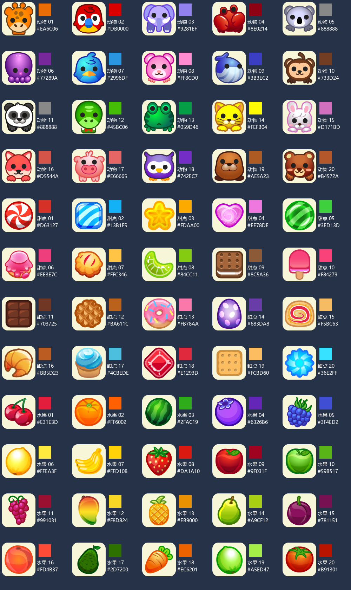
第四主题在原游戏没有对应原帧；其颜色与未来关卡的对应关系尚待确定。
图集事实
原游戏每帧 96×96，图集页为 512×512；一套主题不等于一页。t0 全在 sheet0；t1 在 sheet0/1；t2 在 sheet1/2。依现有坐标和间距回填。设计规范中的 80×80 不可直接取代原资源坐标。
查看 60 个原版帧的坐标 · 查看资源状态当前候选逐帧主色对照
每格左侧为原版，右侧为当前验证副本候选；动物第 17 格左侧仅为历史原版，右侧已替换为海星。动物 14、15、16 及水果 16 已返修，其中动物 15 再次修正为白色主体；甜点 04 已从亮粉调整为紫粉，第 11 张包装已改为深棕色。该对照直接提取当前验证副本，整体逐牌主色与小尺寸辨识仍需进一步验收。
动物
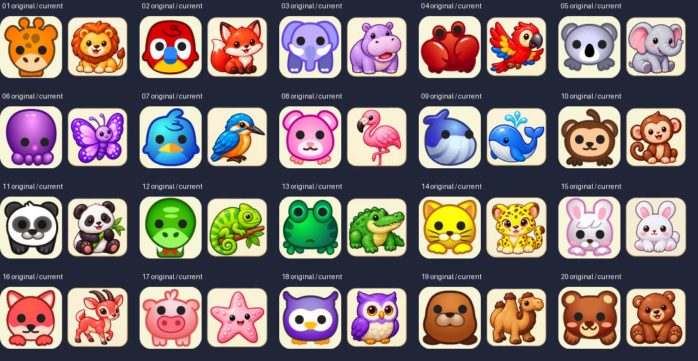
甜点

水果

四处主色修正候选
针对动物 14、15、16 和水果 16，已利用此前单独制作的候选生成修正版图集。下图展示原版、当前候选与修正候选；修正已回填新的独立验证副本；四个牌位分别以固定棋盘测试，均显示预期帧并完成一次配对。这些修正候选已接入开发工程；其他牌面沿用当前候选。
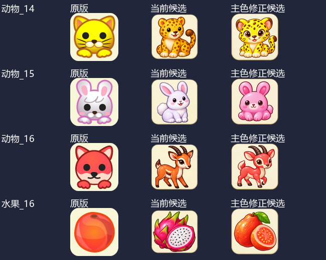
柔和 UI 按钮候选
返回、洗牌、提示按钮已按原资源尺寸生成候选，并仅回填独立验证副本。浏览器自然对局中，提示按钮点击后次数由 3 变为 2，并标示可配对牌；新对局单独点击洗牌后次数由 5 减为 4，且产生 game.shuffle 事件；提示后紧接洗牌未触发的原因待核实。返回按钮在横屏超时结算后点击返回首页并重开通过；竖屏已验证结算显示。
对局实景
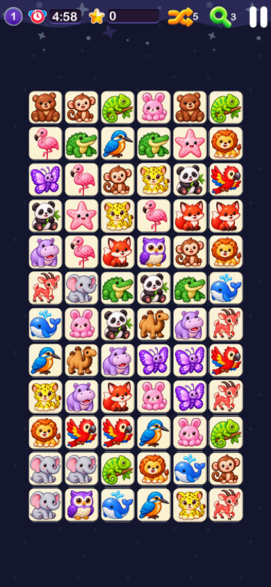
提示操作
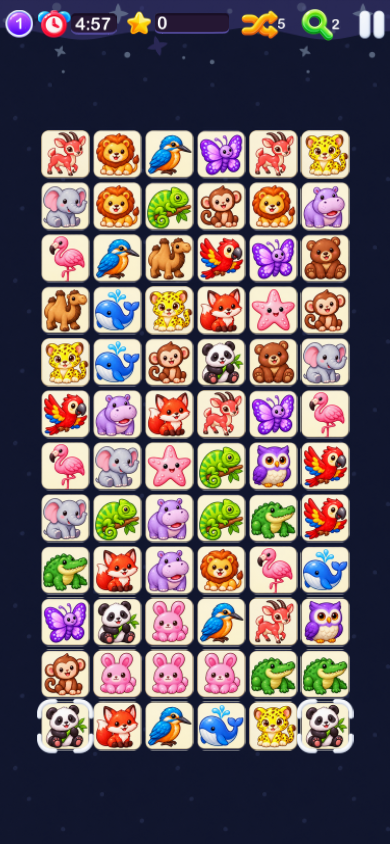
新对局洗牌后
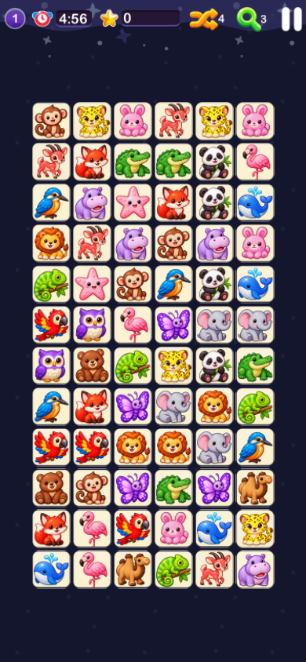
素材尺寸与源文件记录；效果截图不代表完整流程或正式工程验收通过。
最新 UI 风格方向
按最新要求：保留原游戏色调、界面功能与布局；参照 Tile Explorer 的柔和、圆润立体造型，弱化描边。用户已确认主菜单画风；数字后方按要求增加底板。以下为效果概念，尚未拆分或回填；其文字与比例仍须以原版为准。先前生成的暖黄色菜单概念已停用。
原版色调与布局
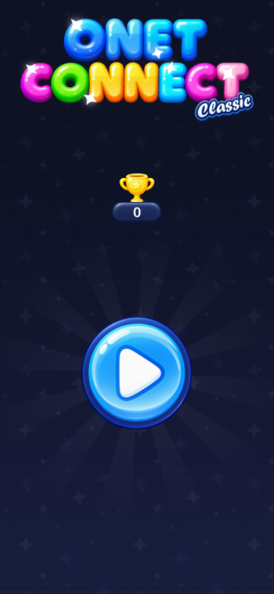
柔和立体概念
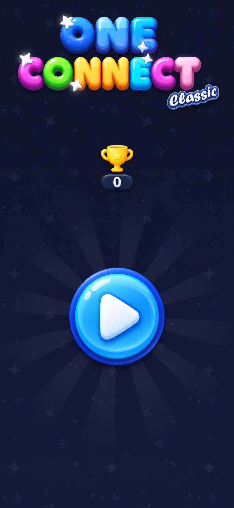
分数底板已在独立副本接入，在原有文字对象绘制之前显示，按文字宽度伸缩；单独的开始按钮新稿外圈仍较深，需进一步调整。
主菜单开始按钮样张
按原按钮尺寸 248×247 和透明边界制作，蓝色与白色播放符号沿用原功能；仅写入主色修正验证副本。浏览器中点击进入主题选择，三主题各完成一次固定棋盘配对。其余界面资源仍为原版。
运行截图
运行素材
署名页候选
保留原有署名、文字及标志内容，背景调整为柔和蓝色；候选已放入独立副本。在默认配置下入口关闭；模拟宿主启用 credits 后，实际显示并点击关闭通过，文字目视可读；此项不改变来源或权属判断。
原版

候选
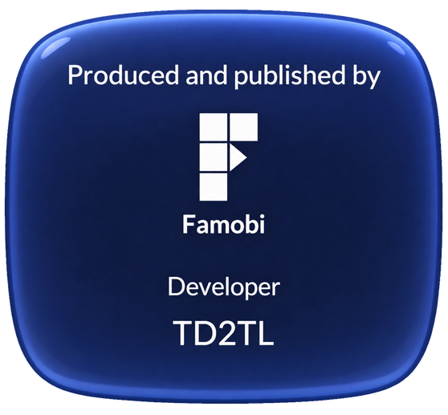
空牌底与顶部装饰
空牌底按原 101×101 尺寸制作并放入独立副本；固定棋盘自然配对后空位显示正常，随后超时、结算及返回首页通过。顶部装饰已重做，上边缘保持填充，透明度按原样大致调整；左右各 6 像素做平铺边缘融合，边界像素一致。横竖屏浏览器对局目视未见明显接缝，真机和其他尺寸仍需验证。
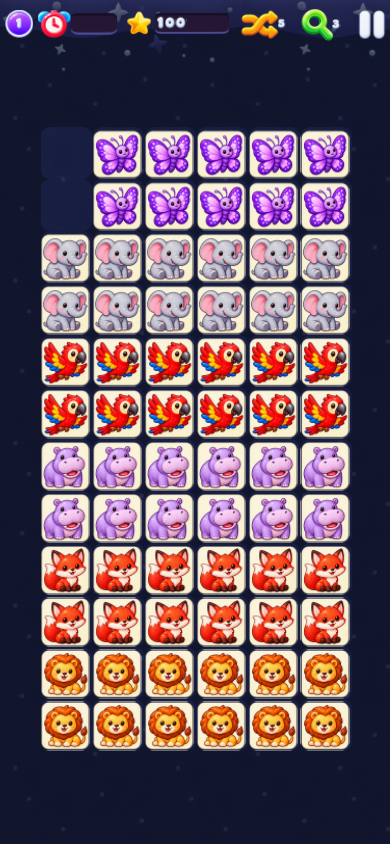
顶部装饰横屏测试
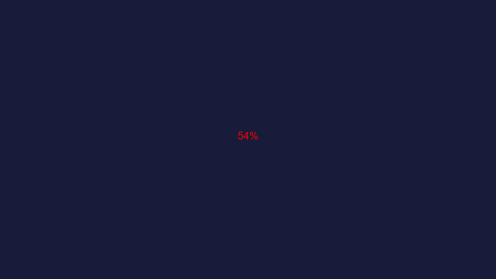
资源覆盖与特效
按当前基线和独立验证副本的 52 个图片文件逐项计算哈希：50 个已修改，2 个仍与基线相同；新增 1 个分数底板。所有对应文件尺寸相同。文件有变化不代表视觉、动画和交互通过；清单不包含音频及游戏壳资源。
粒子候选将原来的圆润白色粒子改成四角造型，与原用途不符，已停用，继续保留原版粒子。其他白色特效图可能由引擎着色或参与动画，需先核对透明度与帧序再处理。
深蓝背景候选
星点背景与点状背景已按原始 300×300 尺寸制作并放入独立副本，保留深蓝色调；控制星点密度以接近原版。两张素材对边颜色最大差值均为 2（8 位 RGB），竖屏浏览器首页与对局截图目视未见明显接缝；三个主题固定棋盘配对回归通过。不同屏幕尺寸与真机仍需核对。
首页
对局
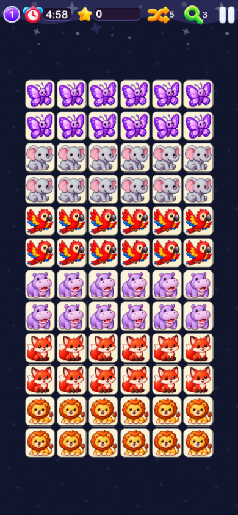
奖励球候选
100、500、1000 分及洗牌、提示五个奖励球已按原图集帧回填独立副本；数字已目视核对。固定棋盘自然通过第一关后实际出现洗牌奖励，进入第二关时洗牌次数由 5 增至 6。当时其他奖励分支尚未自然触发；后续已通过浏览器清关采样。
奖励过程
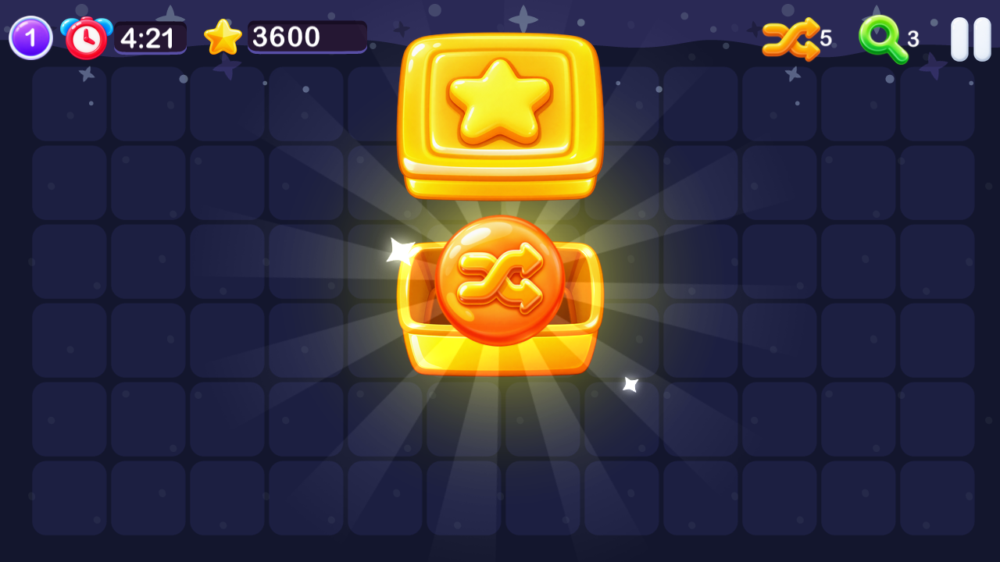
五种候选图集
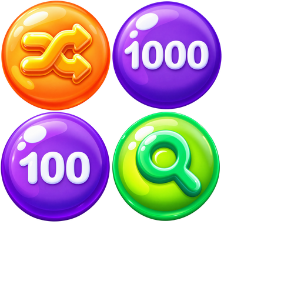
奖励宝箱候选
箱体闭合、打开和独立箱盖已回填独立副本。固定测试棋盘通过正常点击清完第一关，打开宝箱后进入第二关；图示展示实际开合过程，箱盖与箱体在所捕获状态下可见。奖励球已重绘；本次实际抽到洗牌奖励，第二关洗牌次数增加到 6。当时光效为原版；后续奖励分支采样及其限制见下方。
开启前
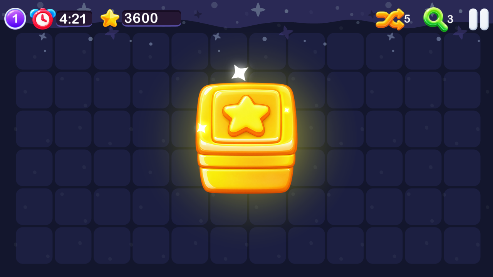
开启过程
奖励显示
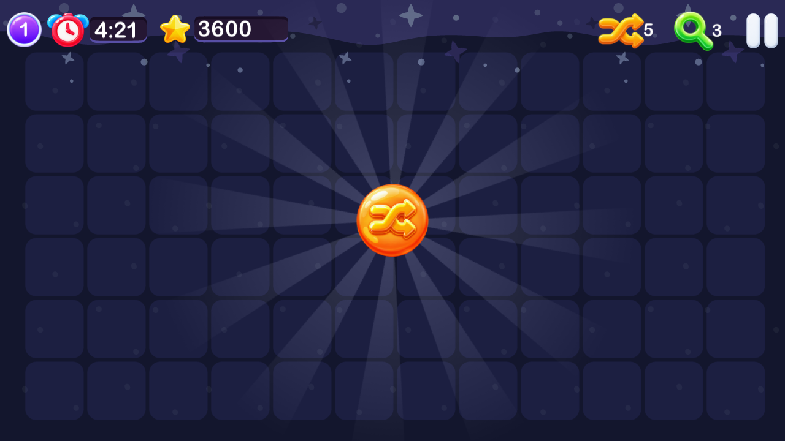
换皮副本跨关验证
横屏浏览器使用固定测试棋盘，脚本读取牌面后通过正常点击完成前两关，经过奖励环节后到达第 3 关，并验证第 2、3 关各 72 张牌的帧配置；未使用直接消牌或跳关。本次仅覆盖动物主题、固定棋盘及浏览器，截图不代表默认随机关卡、其它主题或真机全流程通过。计时数值不属于本次验证范围。
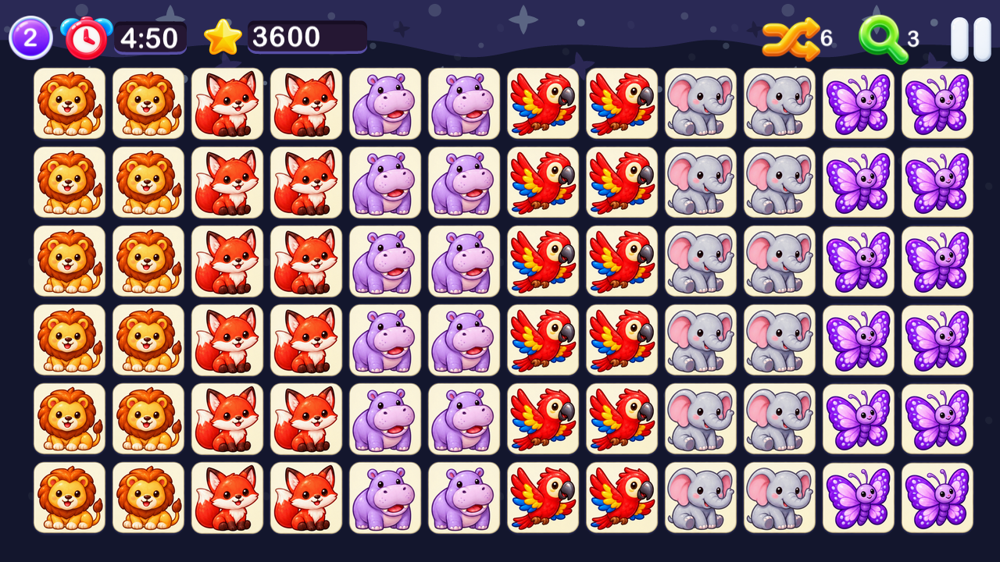
自动洗牌状态图集候选
正常、灰色与带 0 的破碎帧已重绘并放入独立副本；白色帧及三帧以外像素保持原样。三主题固定棋盘基本配对回归通过，但后续受控无可连棋盘中已显示自动洗牌正常帧并完成重排；破碎动画和其他状态仍未触发。白色帧的具体运行用途也仍待核实。
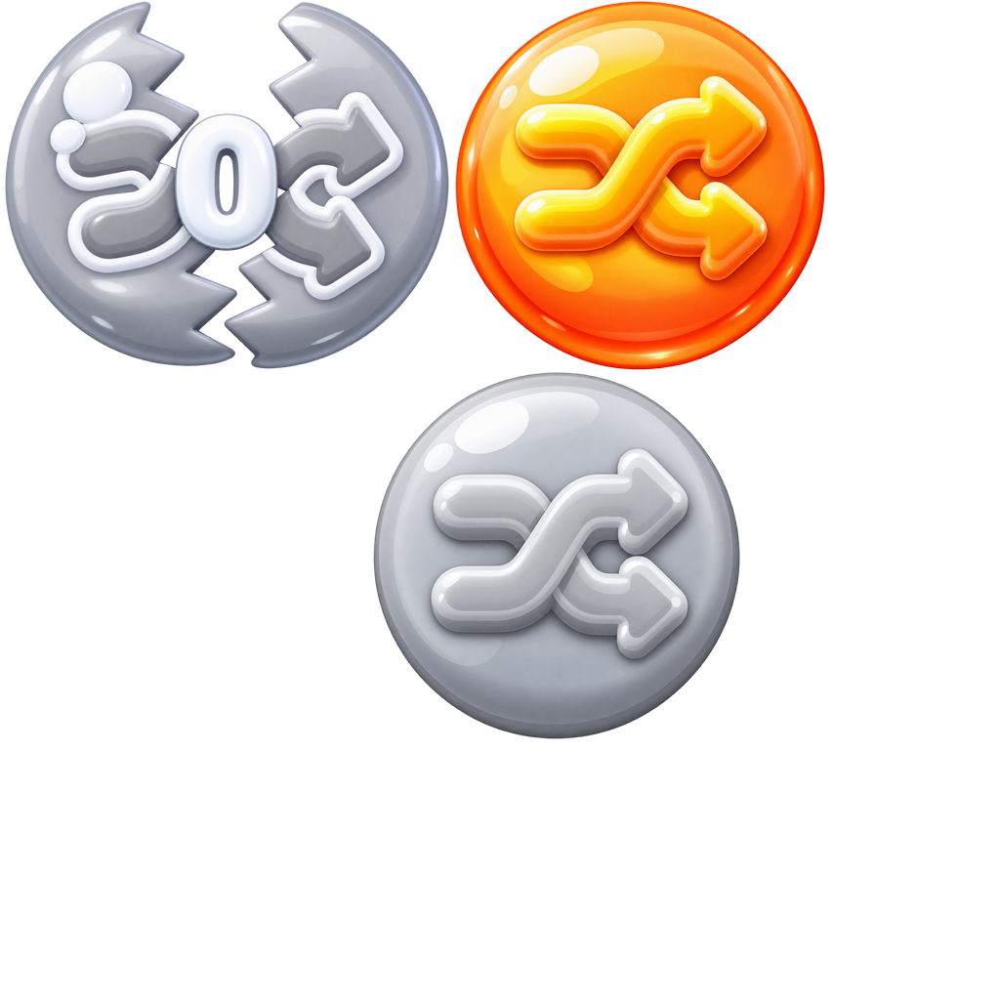
辅助图标候选
超时闹钟及圆形信息／关闭图标按原尺寸制作并清理透明区域，已回填独立副本。帮助打开、关闭和继续对局，以及竖屏缩短计时后自然超时结算回归通过；这些测试尚未逐帧捕获超时图标或实际显示信息按钮，因此不代表这两个图标的运行显示已验收。
超时图标
关闭
信息
对局顶部标识
关卡圆形标识、红色计时器、金色得分星星已按原三帧坐标回填独立副本，保持原颜色及功能；下图显示实际对局和计时数字。暂停、继续及返回首页的浏览器操作通过；不同关卡和动态得分状态仍需进一步核对。
帮助页重绘候选
保持原有六组正误连线示例、颜色和关闭位置，使用柔和蓝色立体面板；已放入独立副本。浏览器中自然打开帮助 → 关闭 → 继续对局的流程通过。示例细节仍需逐项对照原版与实际连线规则；真机尚未验证。
原版素材

独立副本帮助页
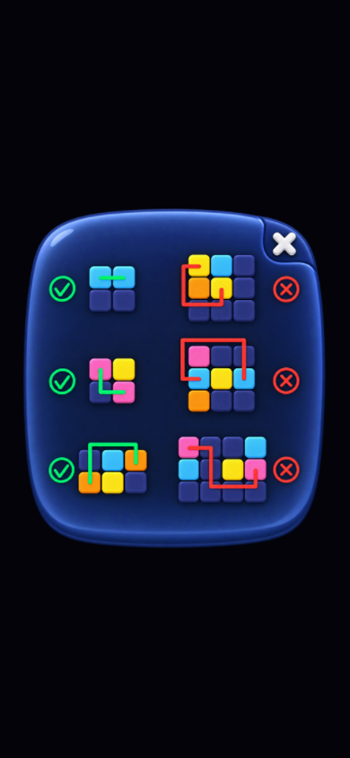
提示标记候选
四角白色提示标记已重绘并放入独立副本。竖屏对局自然点击提示后，次数从 3 变为 2，两个目标牌显示新标记且牌面可辨；不同屏幕和全部牌型尚未逐一验证。
局内声音图标
另外一组开启与静音白色图标已按原尺寸制作并放入独立副本，透明杂点已清理。默认宿主配置下声音对象不可见或未创建；后续模拟宿主启用控件后验证了图标切换，真实宿主及声音效果仍未验证。
声音开启
声音关闭
声音状态候选
白色带圆环的声音开启／关闭图标按原版 126×126 尺寸处理；保留声音波纹的区别。生成稿透明区域有杂点，已用连通区域清理并目视检查。候选已接入开发工程；模拟宿主下验证图标显示及切换，真实宿主音频效果仍未验证。
声音开启
声音关闭
暂停与继续图标
暂停、继续、返回和问号图标已按原尺寸回填独立副本；竖屏浏览器完成暂停 → 继续 → 再暂停 → 返回首页，并单独点击问号打开帮助页。声音开关两个状态经透明区域清理后已接入开发工程；模拟宿主下可显示及切换图标，真实声音控制仍未验证。帮助内容面板已制作柔和候选并在独立副本显示，六组示例需继续逐项核对其教学语义。
暂停菜单
继续对局
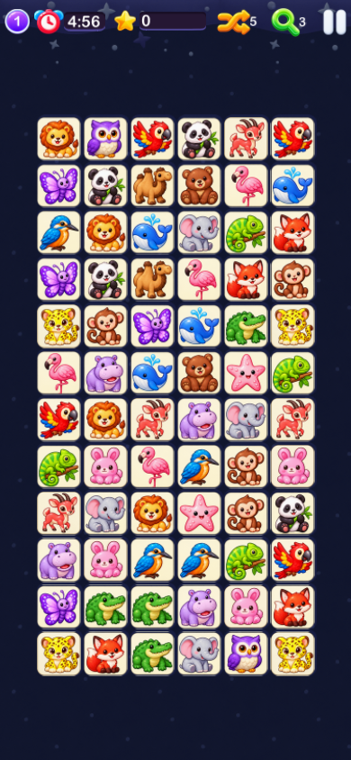
点击帮助
柔和结算弹窗
按原弹窗尺寸及等级、分数、最佳分数和返回按钮挂点回填独立副本。测试对局将原始计时缩短至 10 秒后自然超时；竖屏及横屏均到达失败结算，横屏返回首页和重开成功。广告接口返回不可用，未验证真实广告；胜利结算、真实设备和长分数显示尚未验证。
竖屏超时结算
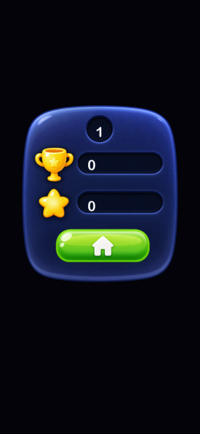
横屏超时结算
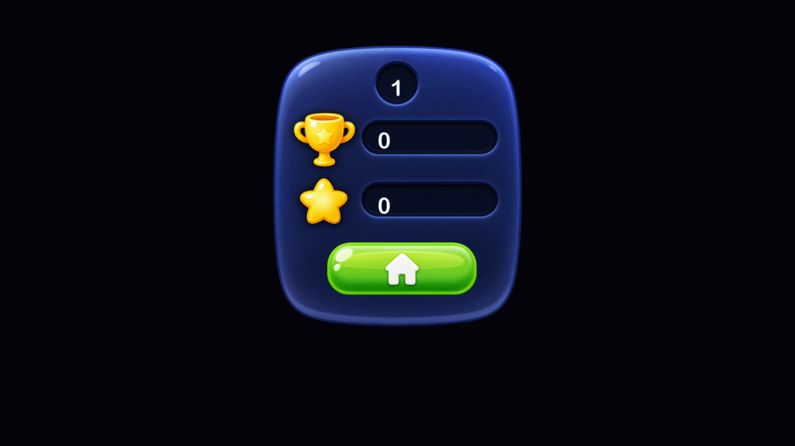
图形上下文恢复
Chrome 测试主动触发 WebGL 上下文丢失与恢复，曾复现底板错误使用奖杯纹理；已在独立副本修复纹理重建。恢复后首页可正常显示底板，并进入固定棋盘完成一对配对。此测试不等同于手机后台切换或真机验证。
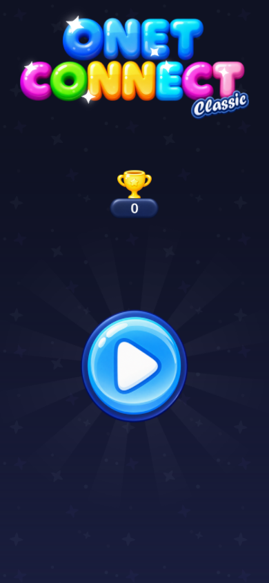
动态得分实际流程
测试使用固定棋盘并把初始计时缩短至 12 秒；自然点击一对后得 100 分，自然超时进入结算，点击返回后首页显示 100。截图来自独立副本；不是默认关卡时长或真机测试。
对局计分
超时结算
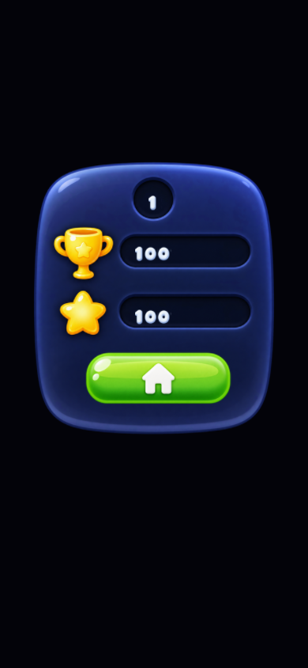
返回首页
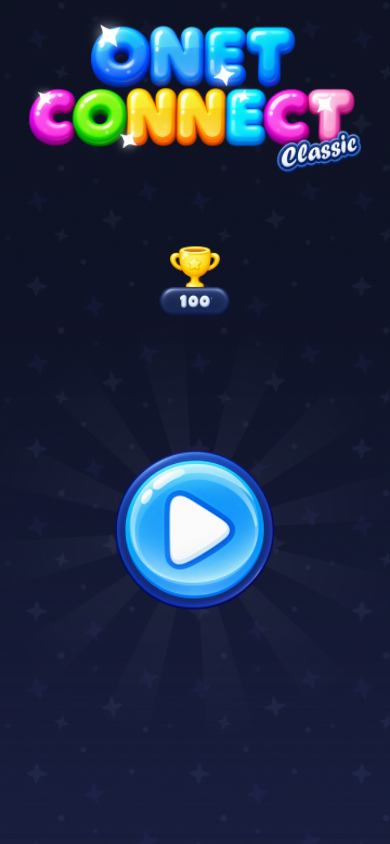
分数底板接入验证
独立副本在菜单分数字体之前绘制底板，原数字不烘焙进图片；底板宽度随文本扩展。以下六位数是人为设置的测试值，分别检查竖屏 WebGL 与 Canvas 2D 显示；横屏首页也已检查。三主题固定棋盘配对回归通过；另用固定棋盘、12 秒测试计时，自然点击一对得到 100 分，超时结算后返回首页，首页显示 100 且底板正常；Chrome 中人工触发 WebGL 上下文丢失和恢复后，底板已能正确重建，并可进入固定棋盘完成一对配对；设备渲染仍需验证。实现依赖当前 Construct 2 的 t25 和 Menu 图层，原程序升级后需要复核。
竖屏 WebGL
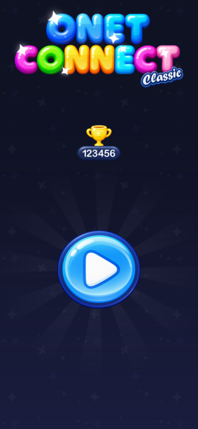
竖屏 Canvas 2D
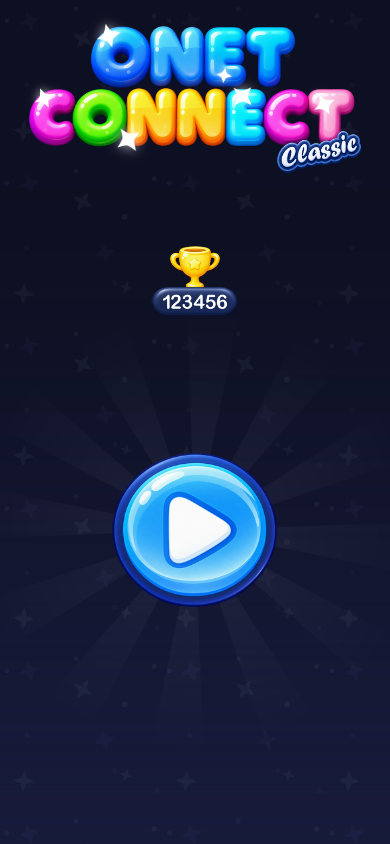
横屏 WebGL
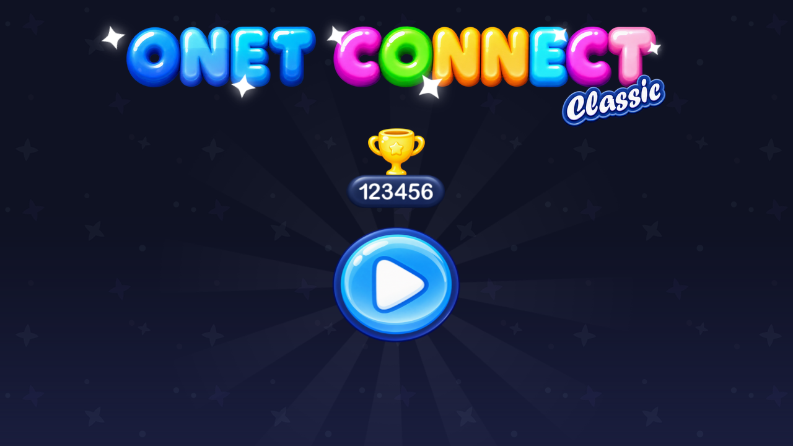
主菜单标题候选
原版标题为 ONET CONNECT Classic；已分别按原图集的竖版、横版帧重绘并回填独立副本。以下是浏览器竖屏及横屏首页截图；三套主题固定棋盘配对回归通过，横屏仅验证首页显示，无 AHA 或真机验证。分数底板已在独立副本接入。
竖屏首页
横屏首页
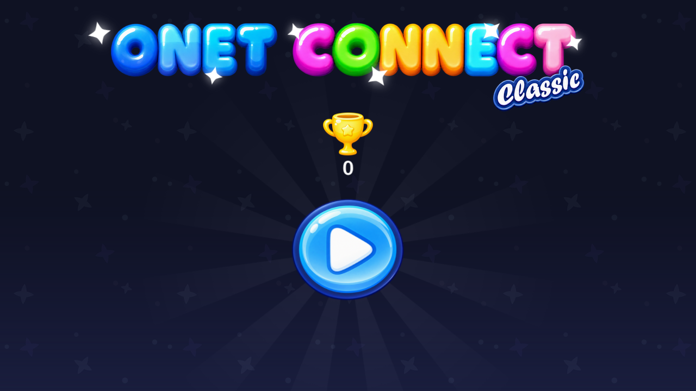
主菜单奖杯候选
奖杯按原版 100×95 画布制作并写入独立副本。首页可见新奖杯，随后三个主题的固定棋盘配对回归通过；分数底板已在独立副本接入，数字仍由原版动态绘制。
修正版主题入口
保留原按钮形状，以修正版牌面生成三套主题预览，并在独立副本中测试三个按钮均能进入相应主题。其余界面仍为原版，截图不代表整体换皮完成。

独立副本运行证据
浏览器使用受控固定棋盘分别进入三个主题，每局加载 72 个牌块；自然点击一对后数量从 72 降至 70，未观察到页面错误。固定棋盘仅覆盖部分牌型，不能证明全部牌面、完整通关、AHA 宿主或真机表现。
动物主题
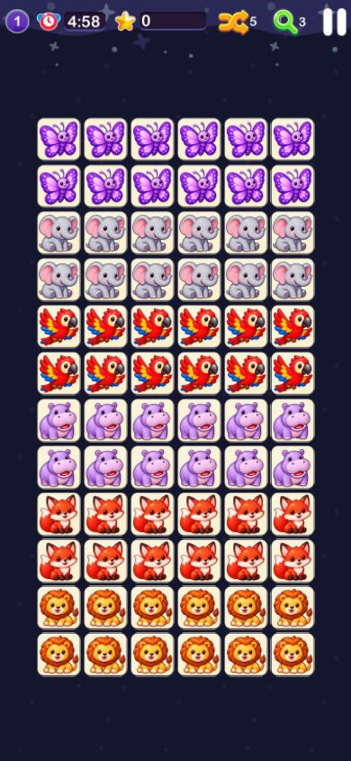
甜点主题
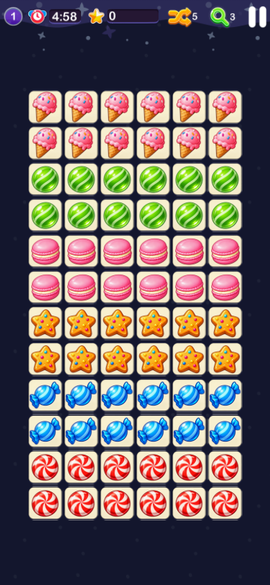
水果主题
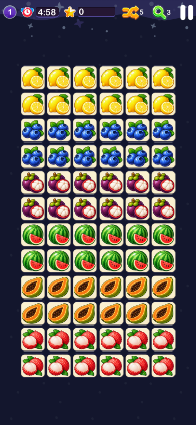
海星牌专项测试
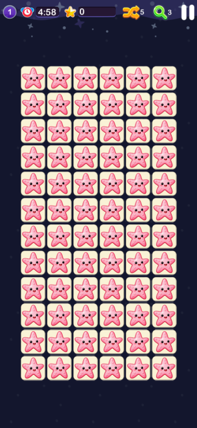
文化与色彩复核
动物组已去除猪候选；斋月组包含清真寺和念珠等元素，展示语境及目标地区接受度仍需人工复核，不能保证所有文化或宗教背景均适用。三套主题需要逐帧对照原牌主色和实际显示尺寸复核，自动色彩诊断不足以证明通过。
数字图集与未修改纹理核查
白色计时与分数字体及金色数字图集已按原图集尺寸和字格回填独立副本。白色字体经人为设置 0–9 和冒号的全字符显示测试，并在固定棋盘实测配对得 100 分、缩短计时后自然超时结算及返回首页；全字符测试属于受控渲染，不是自然游戏记录。金色字体仅检查了图集的数字顺序和尺寸，实际触发的数字动画尚未验收。配对动画截图中未捕获到金色数字，不能作为其显示通过的证据。
白色字体全字符测试
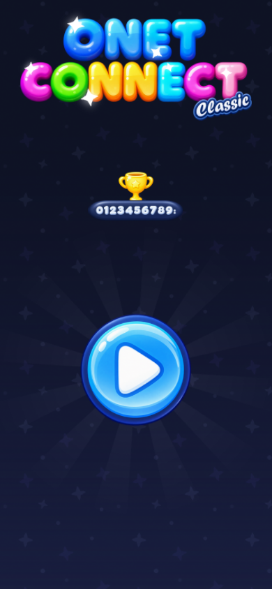
自然超时结算（测试计时）
金色数字图集候选
52 个原有 images 图片中，50 个在验证副本与基线哈希不同，2 个保持原样；数量仅说明文件变化，不代表视觉和运行验收。剩余包括连线与透明占位、渐变和粒子光效；各自的用途、裁切、混合模式与实际触发需要核对后再决定重绘或保留，不能统一按普通插画替换。清单仅覆盖 images，不包含其他路径和运行生成内容。
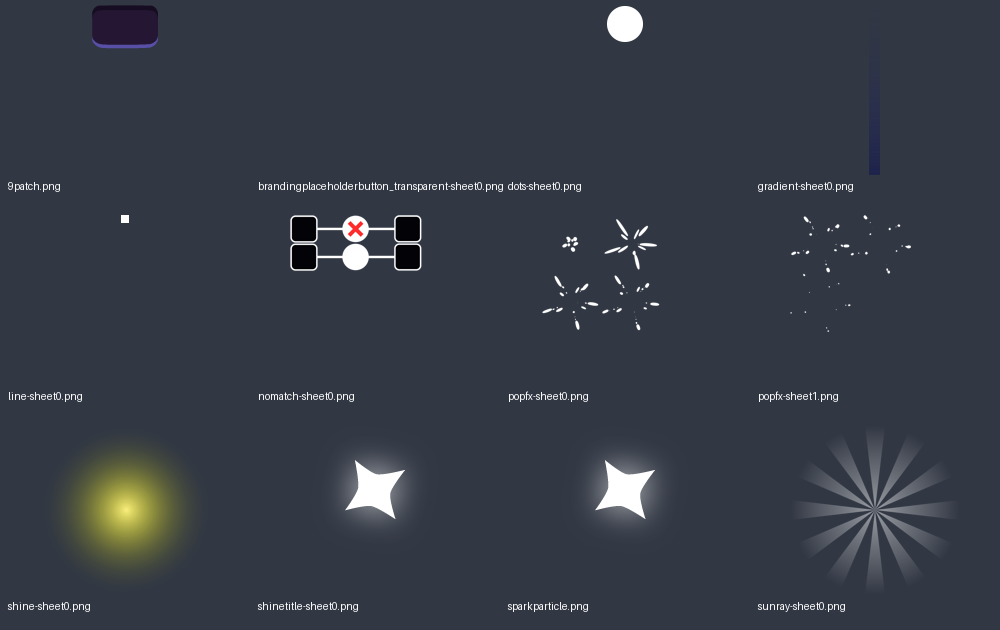
无匹配提示图集候选
首稿误把四个透明牌位填成深色，已停用。修订稿保留透明牌位、白色线框及红色叉号，并按原图集两行位置回填独立副本；对局中完成一对消除回归通过。后来在受控棋盘中通过正常配对触发无匹配状态，观察到两帧切换；详见下方受控测试。默认随机局和真机尚未覆盖。
原图集

修订候选
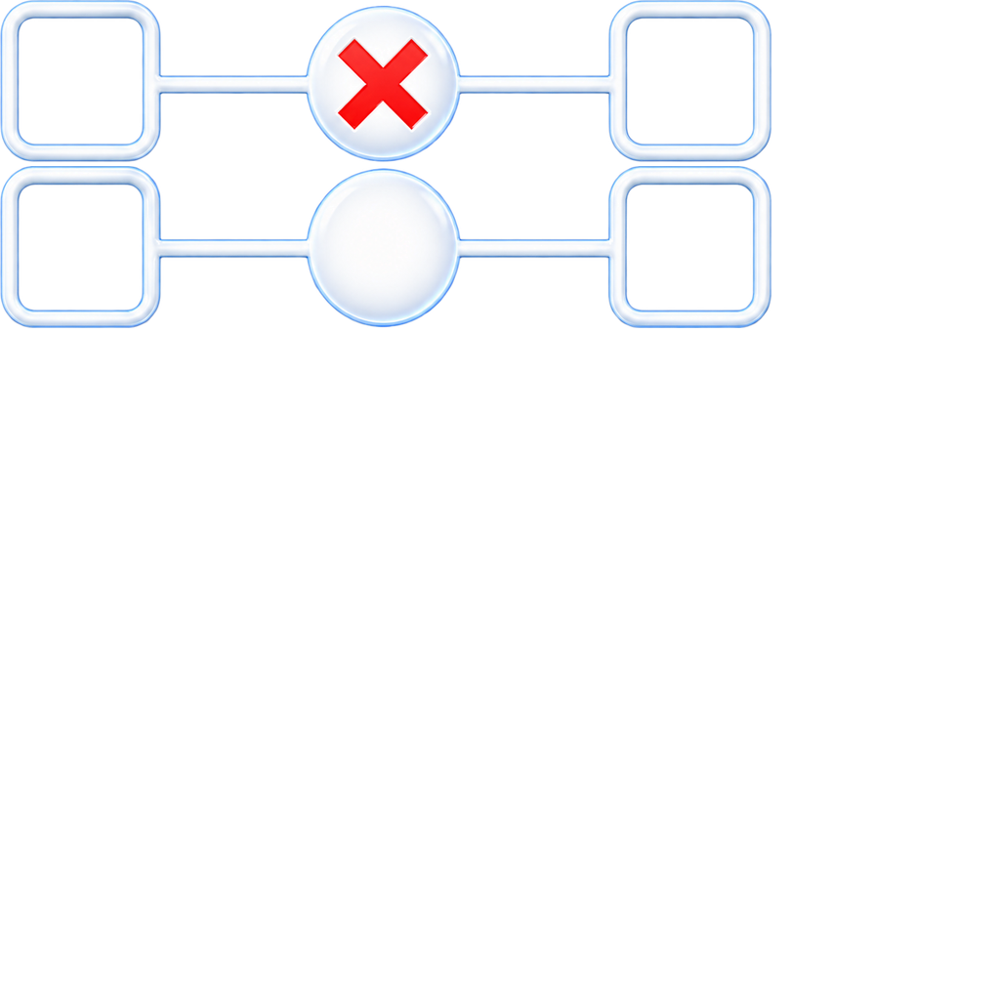
停用首稿
甜点第 4 张主色返修
对照原牌偏紫粉的主色，将候选马卡龙由亮粉调整为紫粉，保留白色夹心；只替换独立副本对应帧，替换前图集已备份。浏览器固定棋盘加载甜点第 4 帧 72 张，自然点击一对后变为 70 张，未观察到页面错误；尚未覆盖随机局、真机及全部牌型的辨识。
原版
修改前
修改后对局
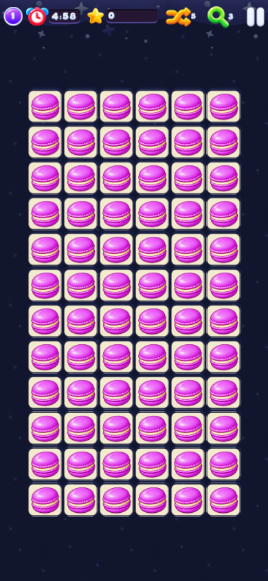
动物第 15 张主色再次返修
前一版兔子以粉色为主体，不符合原牌白色主体、粉色点缀的主色要求。新稿调整为白色主体，保留少量粉色耳内与腮红；已回填独立副本，替换前图集保留备份。浏览器固定棋盘加载 72 张该牌，自然点击一对后变为 70 张，无页面错误；随机局及设备显示未覆盖。
原版
返修前
返修后对局
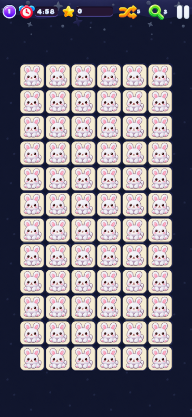
默认随机棋盘回归
未配置固定棋盘：三个主题分别用竖屏浏览器启动，各显示 72 张、覆盖对应主题全部 20 种帧，自动查找相邻同牌并用正常点击完成一对，均从 72 张减至 70 张，未观察到页面错误。另在横屏用默认随机棋盘，通过读取牌位置寻找可连对并模拟点击，连续消除 36 对至 0 张、得分 3600，进入奖励宝箱画面；本次没有点击宝箱，不能视为完成后续关推进。上述为浏览器自动操作，非真机、非人工完整体验。
动物随机局
甜点随机局
水果随机局
随机局清盘后的宝箱
开发工程批量接入
已将独立验证副本中 50 个修改过的原图片、分数底板图片及其脚本接入开发工程，并在游戏入口增加脚本引用。覆盖前文件保存在 备份与文件哈希清单；原始 ZIP、解包和 baseline 均未改动。开发游戏入口建议通过项目预览服务运行。
主工程竖屏浏览器在默认随机棋盘下分别进入三个主题，每个主题显示 20 种牌型，并通过正常点击完成一对配对（72→70）；初次测试水果盘没有相邻同牌，测试脚本现已改为寻找可连路径并重新通过。另在固定棋盘与 12 秒测试计时下，完成配对、自然超时、返回首页并显示 100 分。以上不代表默认时长、所有状态、AHA 宿主或真机验收通过。无匹配提示和自动洗牌正常帧已在受控棋盘触发；部分音效图标、金色数字和洗牌破碎帧仍未触发验证；未改动的技术纹理仍需核对。
动物

甜点
水果
返回首页的动态分数

主工程随机关卡推进
开发工程使用默认随机棋盘，通过浏览器读取位置寻找可连对并模拟正常点击，完成第 1 关 36 对、进入宝箱，点击宝箱后进入第 2 关并加载 72 张牌；无页面错误。宿主插屏接口返回不可用，不能视为真实广告验证。本次为横屏浏览器自动操作，非 AHA 或真机验收。
清盘后的宝箱
进入第 2 关
游戏入口图标
已按原有 180×180 JPG 尺寸重绘并替换开发工程 icon.jpg，保留 3×3 甜点、颜色次序及浅色背景；原图在接入备份中。入口页面的配置引用该文件，HTTP 读取到的文件与替换结果哈希一致；宿主展示与缓存刷新尚未验证。
原图
新图
计时和分数九宫格底板
保留原深紫色及底边蓝紫色，按原 66×44 像素及原透明轮廓制作柔和候选；先在独立副本验证竖屏随机对局、正常计时、配对，以及缩短计时后超时并返回首页，再接入开发工程；主工程竖屏随机局再次完成配对。截图为副本浏览器证据，不代表各种宽度、渲染器及真机全部通过。
原底板

新底板
正常计时对局
受控无可连状态与自动洗牌
为构造测试，临时加载一张只有一对可连牌的固定棋盘；模拟正常点击消除这一对后，原程序显示无匹配提示的两帧交替，随后显示自动洗牌图标。洗牌前后均为 70 张牌，牌面位置发生变化，未观察到页面错误。棋盘通过测试请求注入，未修改正式关卡；这是受控操作后由游戏自然触发，不代表在默认随机关卡、真机或所有动画状态下已验收。洗牌结束后再以正常点击消除一对，牌数由 70 减至 68；破碎帧与洗牌后的完整通关仍需验证。
无匹配提示

自动洗牌
洗牌后继续配对
斋月备用牌：切片核对
按用户要求，第四主题作为未来关卡备用，不接入当前游戏。已核对 20 张切片均为 96×96 RGBA；下图以 96 像素显示切片，供检查小尺寸轮廓与边界。文化语境仍需目标地区人工复核，也不能把静态切片检查当作未来关卡中的运行验证。

开发预览方向
开发预览先前固定为 16:9，容易让浏览器预览与实际竖屏体验不一致；现默认竖屏，并提供横屏切换。浏览器测试确认两种比例切换后都加载主菜单，未发现页面错误；这只是预览容器比例，不代表 AHA 宿主或设备验收。双击 启动开发预览 启动本地服务。
竖屏预览
横屏预览
牌面图集与备份核对
对开发工程中的 3 张 512×512 牌面图集逐像素比对原版：60 个已登记牌帧区域以外均没有变化；备份清单 55 项的当前文件及有原件的备份哈希均匹配。此检查确认图集边界和文件完整性，不代表牌面审美、运行流程或设备验收。
历史记录：配对消除光效旧候选（已停用）
当时两张消除动画图集曾重绘并接入开发工程，后来根据用户要求已恢复原版；下图均为历史候选。原记录：两张消除动画图集已重绘并接入开发工程，保留原有七帧坐标、白色主色和播放设置。独立副本实际配对时采集到第 0、3、6 帧；主工程重新配对时采集到第 0、4 帧，牌数由 72 减为 70。采样未覆盖每个中间帧、其他主题及真机；奖励宝箱的光晕属于另一组资源，后来已单独更新。
新图集
独立副本实际效果
主工程实际效果
标题星光
标题动态星光已重绘为白色柔和亮点并接入开发工程，保持原图尺寸与对象旋转、透明度行为。竖屏浏览器中观察到 6 个星光对象，菜单正常显示并可进入对局；截图仅为时间采样，设备与长时间表现仍需核对。
新星光素材
主工程首页采样
首页放射背景光
已更新首页旋转放射光的色彩纹理，并沿用原版透明度通道，保持光线形状、旋转中心和透明空隙。生成原稿在光线间出现杂色，未直接用于游戏；以原透明轮廓约束处理后接入。独立副本和开发工程竖屏浏览器均验证首页显示与进入对局，设备和其他背景状态尚待验证。
处理前原稿
主工程首页
奖励光晕早期返修记录
奖励金色光晕尝试了两版重绘。第一版在受控副本清关后的宝箱画面出现轻微环状边缘；第二版原稿仍有边缘色带。两稿均未达到平滑过渡要求，未接入开发工程；后续第三稿已更新，见下方记录。以下截图来自默认随机棋盘浏览器自动点击清盘，不代表真机效果。
原光晕宝箱
第一稿实测，未采用
第二稿原图，未采用
主工程竖屏随机关卡推进
使用 390×844 浏览器画面和默认随机棋盘：测试脚本读取牌面位置并模拟正常点击，完成 36 对消除、点击奖励宝箱后进入第 2 关，载入 72 张牌。过程中脚本一度未找到可连对，等待后通过正常点击洗牌按钮继续；宿主插屏接口返回不可用，未观察到页面错误。这是浏览器自动操作，非 AHA 容器或真机实测。
第 1 关开局
宝箱
第 2 关

甜点第 11 张主色返修
原牌以深棕色为主，旧候选大面积红色包装影响主色对应；现将包装改为棕色，保留银色小面积点缀。已接入开发工程，图集中仅该帧改变；主工程使用 72 张该牌的受控棋盘完成一次正常配对，其他牌型及真机尚需验收。
原版
旧候选
主工程返修
包装入口图标及启动检查
包装页按圆形裁剪图标，原候选的四角物品被截断；现将 9 个图案向内收拢并替换，保留原 180×180 JPG 尺寸。为看清加载页，测试人为延迟游戏 iframe 请求，确认实际加载新图标；截图是受控加载，不代表宿主真实网速。
返修前：四角截断
返修后：完整显示
直接打开包装页可进入主菜单；浏览器记录到请求 sw_transsion.js 返回 404 的 Service Worker 错误。调用堆栈指向包装页加载的外部广告 SDK；本地未包含该脚本。拦截 SDK 的对照中主菜单可加载且该错误消失，但这不验证广告、离线缓存或 AHA 宿主。
包装入口 Service Worker 错误定位
正常浏览器包装入口的注册调用堆栈指向 adsdk_1.8.0.0.js，其注册相对路径 ./sw_transsion.js；开发目录不存在此文件，浏览器返回 404。对照实验拦截该外部 SDK 后，主菜单仍可加载，本次未出现该错误。没有添加空白 Service Worker 或假称缓存功能正常；正式宿主所需脚本及真实广告接入仍待平台资料与验证。
奖励星光粒子
奖励星光粒子复用已制作的柔和白色星光，保留原 130×130 画布和粒子系统参数；已在独立副本及开发工程接入。主工程默认随机局经正常点击清盘、出现宝箱后打开并进入第 2 关，截图观察粒子未遮挡奖励；真实设备及其他奖励分支仍需验证。宝箱金色光晕是独立资源，后来已单独更新。
粒子素材
主工程宝箱
主工程主题选择复核
当前主题选择页显示动物、甜点、水果三组入口，动物入口未见猪形象，预览物品与对应主题的候选牌面相符；第四主题未作为入口接入。浏览器受控棋盘中三个入口分别打开对应主题，并各完成一对正常配对；这不代表完整文化审查或全部关卡通过。
主工程暂停、帮助与失败回归
竖屏浏览器主工程中，依次完成暂停→继续→再次暂停→返回首页；另一次打开帮助、关闭后返回暂停并继续游戏。失败测试临时把计时改成 10 秒，等待自然超时并检测到失败事件。截图显示帮助页和失败页的新资源；帮助图示的玩法语义及 AHA 设备仍需验收。
初次并行执行暂停、帮助测试时，在布局尚未初始化时读取状态报错；调整为等待菜单就绪后单独重测通过。失败测试独立通过，不据此断定初次时序问题的完整原因。
暂停

帮助

失败结算

奖励金色光晕第三稿
前两稿有色带而未采用；第三稿使用平滑暖金色纹理并保留原透明度通道，保持原尺寸和位置。独立副本及主工程通过默认随机局清盘触发宝箱，主工程点击宝箱后进入第 2 关；浏览器截图中未见前稿明显环状边缘。新光晕较原版柔和，其他奖励状态、不同渲染器与真机仍待核对。
原版光晕
主工程第三稿

首页背景渐变
已重绘并接入首页的深蓝渐变纹理，保留 17×252 尺寸和原透明度；浏览器主工程验证菜单显示及进入对局。该纹理会被横向拉伸，竖屏截图未见明显断线；其他窗口比例、设备和渲染器仍待核对。
历史记录：连线端点旧候选（已停用）
该柔和候选后来根据用户要求已恢复原版，下图为历史候选。原记录：白色连接端点已制作柔和候选并接入开发工程，保留原 38×38 尺寸与透明形状；连线本体沿用纯白功能纹理。受控固定棋盘中正常点击一对，采样到一段连线和两个端点，牌数由 72 减为 70；其他路径和设备仍需验证。
端点素材
主工程配对采样
水果第 4 张主色返修
自动色相筛查提示原牌偏蓝紫，而旧山竹候选果皮与切面偏红紫；经目视复核后，已将果皮与切面改为蓝紫，白色果肉和绿色小叶保留，同时更新主题入口对应缩略图。开发工程中受控棋盘加载该帧并正常消除一对，入口也能进入水果主题。自动色相筛查只用于定位，不能替代逐牌目视、文化和设备验收。
原版
旧候选
主工程返修
更新后的入口
主工程绘制方式与屏幕方向
主工程浏览器分别验证竖屏 WebGL、横屏 WebGL 和竖屏 Canvas 2D 的菜单分数底板；数字 123456 是人为设置的显示测试值。Canvas 2D 另外用受控固定棋盘完成一对配对。Chrome 人为触发 WebGL 上下文丢失并恢复后，首页底板显示，进入固定棋盘并完成一对配对。以上均是浏览器测试，不等于手机前后台切换、真实设备或完整流程验收。
竖屏 Canvas 2D
横屏 WebGL
上下文恢复后对局
模拟宿主声音图标验证
现有本地适配设置为宿主管理音频控件，因此默认不显示游戏内声音图标。测试通过临时拦截响应，将该标志模拟为有控件，不改写工程文件：主菜单与暂停菜单的声音按钮均显示，点击后图标帧由 0 切换至 1；未观察到页面错误。此测试验证显示和状态切换，不证明真实宿主控件、设备声音或静音效果。
首页
暂停：开启
暂停：关闭
金色数字使用范围调查
原始 Construct 2 拆解模型中，金色数字对应对象 t17：布局实例清单未列出 t17；模型的事件条件和动作中也未检出直接 t17 操作或以它为目标的常规创建参数。现有首页、对局、结算和配对观察只出现白色数字对象 t25。该结果不足以证明任何动态或宿主路径都不会使用 t17，金色图集仍保留，实际运行显示尚未验证。
模拟宿主署名页
默认宿主配置的 credits 为关闭；测试临时在浏览器响应中设为开启，不改正式配置。主工程使用原入口按钮自然打开署名页，页面显示 Famobi 和 TD2TL，点击关闭后页面隐藏且未观察到页面错误。截图属于模拟宿主场景，不代表默认入口或 AHA 实测。
奖励分支自然采样
通过浏览器正常点击清盘并打开宝箱，主工程随后自然采样到 100、500、1000 分和提示道具奖励；先前独立副本采样到洗牌道具。100、1000 与提示图标在中途截图可见，对应结果分别为加 100 分、加 1000 分及提示次数从 3 增至 4；500 分图标截图仅捕获到宝箱后方部分，但下一关得分从 3600 变为 4100。之后三次正常随机清关都抽到提示道具，因此未获得更完整的 500 分图标截图。此前洗牌奖励测试的次数由 5 增至 6。以上是浏览器自动正常操作，尚不代表真机或广告奖励验证。
100 分 · 主工程
500 分 · 部分露出
1000 分 · 主工程
提示 · 主工程
洗牌 · 独立副本
图集以外的视觉资源
除原版 images 外，开发目录还包含入口图标、平台标识、排行榜图标和两种语言旗帜；新增分数底板位于 images。当前已替换入口及排行榜图标，平台标识和语言标识暂保留原样；排行榜及标识的默认入口未自然到达，不能声称已完成换皮或运行验收。远程 SDK 可能另行提供资源，此清单不覆盖它们。
平台标识
排行榜图标
语言标识
宿主排行榜图标
原宿主图标是金色平面奖杯，现复用项目已采用的柔和立体奖杯，保持 SVG 画布和引用路径；原文件已备份。默认本地菜单隐藏；模拟宿主启用菜单后点击菜单按钮，奖杯显示在排行榜入口，点击后仅观察到菜单关闭。未验证真实宿主、排行榜数据或结果页面。
原图
新图
模拟宿主排行榜入口
通过测试请求临时设置宿主菜单可见，不更改正式配置；点击菜单按钮后可见新奖杯图标。点击奖杯后仅观察到菜单关闭，未出现可验证的排行榜数据页，也没有验证真实宿主服务。图中平台品牌与语言旗帜保留原样。
最新版本整批回归
再次核对开发工程与独立副本的 52 个原图片：哈希和原尺寸均一致；接入备份清单 55 项的当前文件及原文件备份均匹配。随后用主工程竖屏默认随机棋盘分别进入动物、甜点、水果，每组加载 72 张、出现 20 种牌型，并正常消除一对（72→70），未观察到页面错误。哈希和单次对局不代表全部画面、色彩或设备验收。
动物
甜点
水果
换皮回滚入口
已提供 回滚检查工具：默认只核对清单；执行前必须另存当前快照，若发现后续改动或备份不匹配则拒绝。实际工程仅运行过检查，回滚执行与冲突拒绝在独立夹具验证；恢复步骤和范围见美术资源替换说明。工具不覆盖预览页、配置或第四主题。
帮助图示与实际连线核对
对照原版帮助素材，重绘稿保留三组绿色示例（直线、一次转弯、两次转弯）及三组红色错误示例的位置、颜色和连线路径形态。另在主工程默认随机局中，由测试程序读取牌位置并模拟正常点击，分别找到并成功消除直线、一次和两次转弯的同牌；另选一组未找到不超过两次转弯路径的同牌，点击后牌数保持不变。一次、两次转弯截图捕获了实际连线。本次验证覆盖代表案例，不等于穷举所有棋盘或证明每个红色示意的所有规则。
原帮助页
重绘帮助页
实际一次转弯
实际两次转弯
完成情况
| 项目 | 当前状态 |
|---|---|
| 三套现有主题 | 60 种候选已切片并接入开发工程；色彩逐帧验收未完成。 |
| 斋月备用主题 | 20 个 96×96 备用切片；未加入游戏。 |
| 其他美术 | 背景、界面、按钮、图标及状态资源已大范围接入；平台标识、语言旗帜与技术纹理保留，部分状态仍待验收。 |
| 运行验证 | 浏览器随机棋盘中三主题均已自动点击清盘并进入第 2 关；AHA 与真机及其余状态尚未验证。 |
| 音频 | 尚未替换；授权与来源待核对。 |